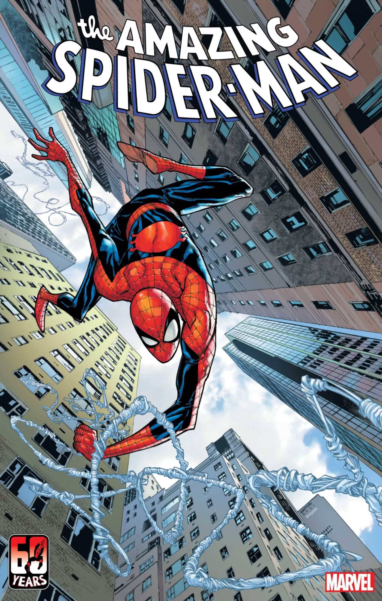
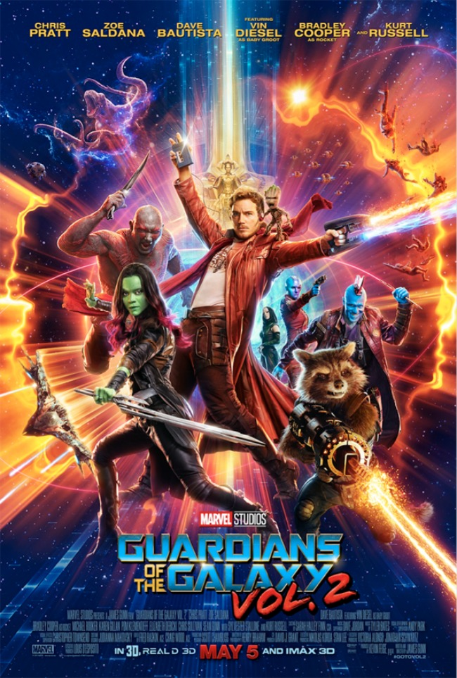

Marvel Comics
Die Geschichte von Marvel Comics
Die Geschichte der Marvel Comics geht zurück bis ins Jahr
1939, als Timely Publications
-gegründet von Martin Goodman - die ersten Comics veröffentlichte.
1941 wurde Captain America
eingeführt – eine patriotische Figur, die schnell populär wurde.

In den 1960er-Jahren veränderte sich Marvel unter der Leitung von
Stan Lee,Jack Kirby und
Steve Ditko
. Statt perfekter Helden wurden Charaktere mit echten Problemen erschaffen
–
Figuren wie Spider-Man, Die Fantastischen Vier, X-Men und
Iron Man
.Diese Entwicklungen halfen Marvel, sich von der Konkurrenz abzuheben
und eine riesige Fangemeinde aufzubauen.

Mit dem Start des
Marvel Cinematic Universe (MCU) 2008
wurde die Marke endgültig weltweit bekannt. Filme wie
Iron Man, Avengers und
Guardians of the Galaxy
begeisterten Millionen Fans und haben die Art, wie Superhelden-Geschichten
erzählt werden, revolutioniert.